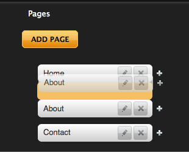
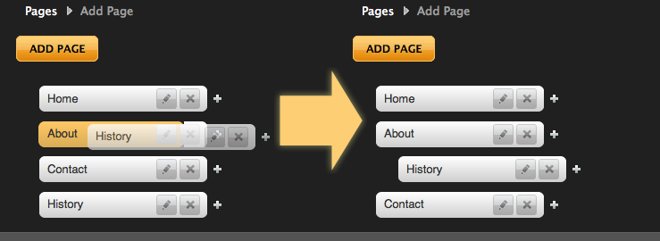
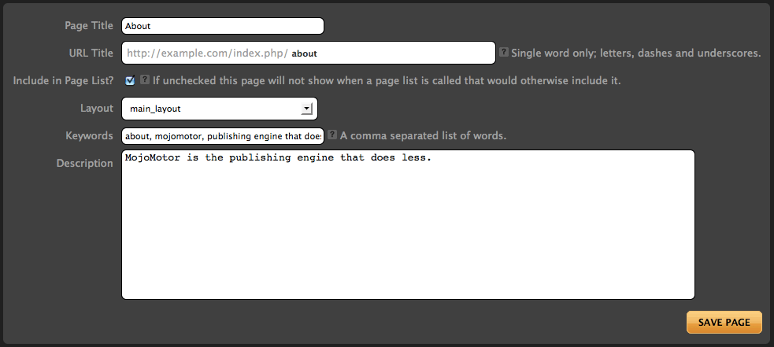

Pages
In MojoMotor, a page represents an HTML page on your site, although unlike a traditional HTML page, there isn't an actual file on your server. Instead, MojoMotor takes care of turning your pages into web pages when someone visits your site.
The benefit of this approach is that information can be presented dynamically by using special Tags within your pages. The secondary benefit of this approach is that your pages can be managed from within the MojoMotor Control Panel using your web browser, so you no longer need to use FTP to upload files to your server whenever a page changes.
Your MojoMotor powered site will consist of, at minimum, one page, representing your site's "index" or "home" page. Most sites have more than one page, of course, but even the most basic site must have at least one page.
Every page must be based on a Layout which controls everything about the page except the content (words, images, etc) of the page which is editable via regions once logged in.
MojoMotor pages are managed from within your Toolbar. Pages are organized into a hierarchical list which you can be dragged and nested into any order you want. This page order will be respected when calling the {mojo:site:page_list} tag.
Important concept: A page in MojoMotor can be thought of as a web page. Each page is based off a Layout.
Adding and Removing Pages
Pages can be added via the "ADD PAGE" button. Pages added in such a way will be added to the main "level" of the site hierarchy, that is to say they will not be sub pages. If you wish to create a page as a sub page of another, you can also add a page via the "+" beside the page you wish to be the parent.
To delete an existing page, simply select the "delete" link ("X") beside the page you wish to delete. You will be prompted to confirm your deletion to prevent accidental layout removal.
Deleting pages that have child pages will result in the deletion of the child pages as well. If you do not want the child pages to be removed, you should re-organize your page structure first.
Organizing Pages
Your site pages can be organized (sorted and nested) via the main pages tab of your toolbar. One of the major advantages of organizing your site in this way is the use of the {mojo:site:page_list} tag, which can be used to create menus for your website, or otherwise organize your content.
To move a page on the same level, simply drag it to where you want it to be. Targets will become highlighted as you move your mouse over the
area.

To make a page become a child of another page, simply drag it on top of the page you want to be parent. Again, the target will highlight as you
move your mouse over the area.

Anatomy of a Page

Page Title
In addition to helping identify the page in the page list, the page title is used when rendering {mojo:site:page_list}, and can be called via {mojo:page:page_title}.
URL Title
Here you can define a "human readable" URL title for your page. URL titles may only contain alpha-numeric characters and no spaces. The purpose of a URL Title is to enable your pages to be accessed using a URL such as:
http://example.com/index.php/url_title/
A URL title will be automatically generated for you based on the title you give to the page. URL Titles must be unique.
Include in Page List?
If this option is checked, this page and its children will be shown when {mojo:site:page_list} is used. Pages (and their children) can be excluded from the page list by unchecking this option.
Layout
Every page is based on a Layout. This drop down provides a choice of layouts that can be used by this page.
Keywords
Simple page meta-data. It is most commonly used to generate HTML <meta name="keywords" /> tags. It can be called via {mojo:page:keywords}
Description
Simple page meta-data. It is most commonly used to generate HTML <meta name="description" /> tags. It can be called via {mojo:page:description}